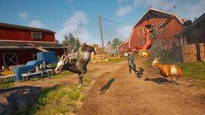
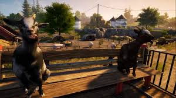

Goat Simulator 3 is one of the funniest and craziest games ever created. Instead of saving the world or fighting dangerous enemies, players control a wild goat that creates complete chaos everywhere.
The game is filled with hilarious moments, random explosions, funny physics, crazy vehicles and endless trolling possibilities. Players can run around the city, destroy objects, launch people into the air and create pure madness.
Why Players Love Goat Simulator 3
Unlike normal games, Goat Simulator 3 does not take itself seriously. The game is intentionally weird, buggy and funny, which makes it extremely entertaining.
Every mission feels random and unexpected. One moment you are driving a car, the next moment your goat is flying through the sky after hitting a giant explosion.

Funniest Features
- ✔ Crazy open world gameplay
- ✔ Funny ragdoll physics
- ✔ Multiplayer chaos with friends
- ✔ Explosions and destruction everywhere
- ✔ Weird goat powers and costumes
- ✔ Funny vehicles and stunts
- ✔ Meme-level gameplay moments
- ✔ Hidden secrets and easter eggs
Open World Madness
The game world is packed with funny activities and strange NPCs. Players can interact with almost everything around them. This creates unlimited opportunities for hilarious gameplay moments.
Goat Simulator 3 becomes even more fun when played with friends. The multiplayer mode allows players to troll each other, race through the city and create complete destruction together.
Graphics & Performance
The graphics are colorful, smooth and cartoon-style which perfectly matches the silly gameplay. The game runs well on most modern PCs and provides a smooth experience even during massive chaos scenes.
Should You Play It?
If you enjoy funny games, random chaos and meme content, Goat Simulator 3 is definitely worth trying. It is one of the best games for relaxing and laughing with friends.
Play Goat Simulator 3

Experience one of the funniest open world games ever made.
Explore GameCredits: Goat Simulator 3 belongs to its original developers and publishers. This article is made for educational and review purposes only.